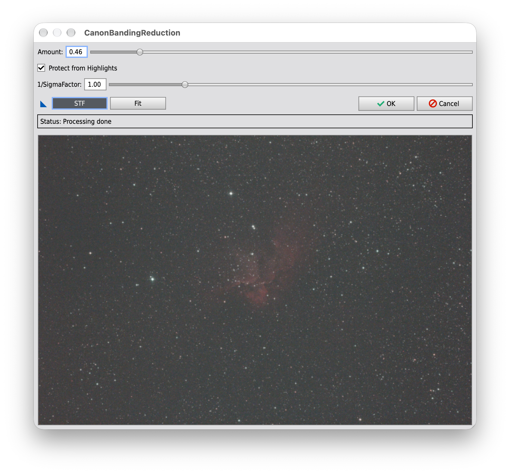

SensorDestripe
PixInsight update repository for the SensorDestripe script.
Reduces the horizontal banding along the sensor rows that affects images from some DSLR and mirrorless cameras, for example the Canon EOS series, by equalizing the background brightness of each image row. An optional highlight protection excludes bright pixels from the row background, so stars and nebulae do not cause overcorrection. The result can be checked in a live preview, optionally with the current STF.
Apply the script to images that have not been rotated, so the rows of the image are the rows of the sensor.
Based on CanonBandingReduction by Georg Viehoever (2009-2013, GPLv3), ported to the V8 engine by Peter Proulx. Up to version 0.10.2 this script was published here as CanonBandingReduction.
This page is informational. For PixInsight, use the repository URL shown below.
Repository URL for PixInsight
https://tricx.de/pi-scripts/SensorDestripe/
Installation in PixInsight
- Resources > Updates > Manage Repositories
- Add repository:
https://tricx.de/pi-scripts/SensorDestripe/ - Run Check for Updates
- Run via Script > Tricx > SensorDestripe
Screenshot
